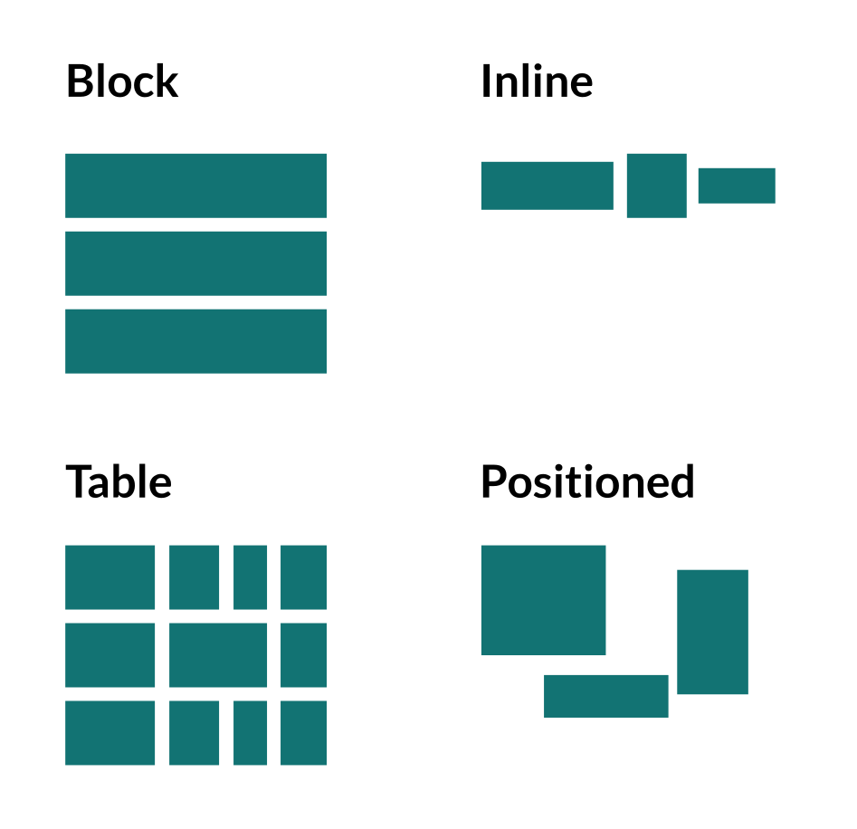
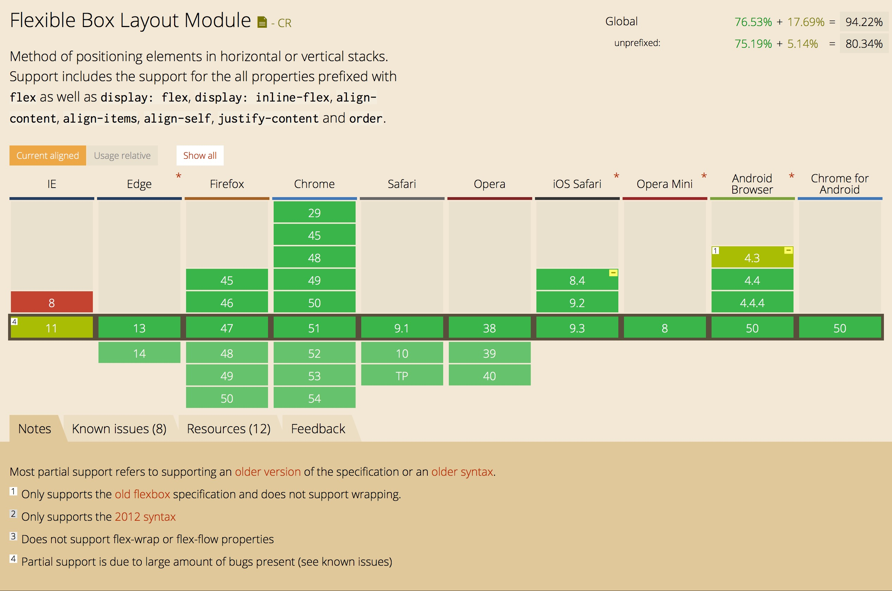

name: cover # Dr. Flexbox or<br>how I learned to stop worrying<br>and vertically align the box. Johannes Ewald<br> Peerigon GmbH<br> [@jhnnns](https://twitter.com/jhnnns) <img id="slide-cover-img" src="./assets/peerigon-logo.png" width="400"> --- layout: true class: theme-whiskey, slides-centered .slides-header[ Flexbox ] --- class: slides-chapter count: false background-image: url(./assets/strangelove-1.jpg) ## Dr. Flexbox --- What is flexbox? > Method of positioning elements in horizontal or vertical stacks. --- .slides-content[ For over 10 years, CSS has only provided four types of layout:  ] --- .slides-content[ Now, there's a new kid on the block: .slides-columns[ ] ] --- .slides-columns[ .col[ <div style="width: 29rem"><span class="slides-label" style="background-color: #127373;">Container</span></div> ``` display: block; ``` ] <div data-flexbox-example> <div style="display: block;"> <div>1</div> <div>2</div> <div>3</div> </div> </div> ] --- .slides-columns[ .col[ <div style="width: 29rem"><span class="slides-label" style="background-color: #127373;">Flex container</span></div> ``` display: flex; ``` ] <div data-flexbox-example> <style> *[data-flexbox-example] * { margin-bottom: 0 !important; } *[data-flexbox-example] > div { display: flex; background-color: #127373; width: 22rem; height: 18rem; } *[data-flexbox-example] > div > div { background-color: #46e1c8; min-width: 4rem; min-height: 4rem; border: 6px solid #e6e1de; font-size: 3rem; line-height: 4rem; text-align: center; } </style> <div> <div>1</div> <div>2</div> <div>3</div> </div> </div> ] --- .slides-columns[ .col[ <div style="width: 29rem"><span class="slides-label" style="background-color: #127373;">Flex container</span></div> ``` display: flex; flex-direction: row; /* default */ ``` ] <div data-flexbox-example> <div> <div>1</div> <div>2</div> <div>3</div> </div> </div> ] --- .slides-columns[ .col[ <div style="width: 29rem"><span class="slides-label" style="background-color: #127373;">Flex container</span></div> ``` display: flex; flex-direction: column; ``` ] <div data-flexbox-example> <div style="flex-direction: column"> <div>1</div> <div>2</div> <div>3</div> </div> </div> ] --- .slides-columns[ .col[ <div style="width: 29rem"><span class="slides-label" style="background-color: #127373;">Flex container</span></div> ``` display: flex; flex-direction: row-reverse; ``` ] <div data-flexbox-example> <div style="flex-direction: row-reverse"> <div>1</div> <div>2</div> <div>3</div> </div> </div> ] --- .slides-columns[ .col[ <div style="width: 29rem"><span class="slides-label" style="background-color: #127373;">Flex container</span></div> ``` display: flex; flex-direction: column-reverse; ``` ] <div data-flexbox-example> <div style="flex-direction: column-reverse"> <div>1</div> <div>2</div> <div>3</div> </div> </div> ] --- ### `display: flex` .slides-content[ Aligns all **flex items** along the so-called **main axis**. ] --- ### `flex-direction` .slides-content[ Determines the **direction** the **main axis** is pointing to. ] --- `flex-direction: row` --- `flex-direction: column` --- `flex-direction: row-reverse` --- `flex-direction: column-reverse` --- .slides-columns[ .col[ <div style="width: 29rem"><span class="slides-label" style="background-color: #127373;">Flex container</span></div> ``` display: flex; ``` ] <div data-flexbox-example> <div> <div>1</div> <div>2</div> <div>3</div> </div> </div> ] --- .slides-columns[ .col[ <div style="width: 29rem"><span class="slides-label" style="background-color: #127373;">Flex container</span></div> ``` display: flex; justify-content: flex-start; /* default */ ``` ] <div data-flexbox-example> <div style="justify-content: flex-start"> <div>1</div> <div>2</div> <div>3</div> </div> </div> ] --- .slides-columns[ .col[ <div style="width: 29rem"><span class="slides-label" style="background-color: #127373;">Flex container</span></div> ``` display: flex; justify-content: flex-end; ``` ] <div data-flexbox-example> <div style="justify-content: flex-end"> <div>1</div> <div>2</div> <div>3</div> </div> </div> ] --- .slides-columns[ .col[ <div style="width: 29rem"><span class="slides-label" style="background-color: #127373;">Flex container</span></div> ``` display: flex; justify-content: center; ``` ] <div data-flexbox-example> <div style="justify-content: center"> <div>1</div> <div>2</div> <div>3</div> </div> </div> ] --- .slides-columns[ .col[ <div style="width: 29rem"><span class="slides-label" style="background-color: #127373;">Flex container</span></div> ``` display: flex; justify-content: space-between; ``` ] <div data-flexbox-example> <div style="justify-content: space-between"> <div>1</div> <div>2</div> <div>3</div> </div> </div> ] --- .slides-columns[ .col[ <div style="width: 29rem"><span class="slides-label" style="background-color: #127373;">Flex container</span></div> ``` display: flex; justify-content: space-around; ``` ] <div data-flexbox-example> <div style="justify-content: space-around"> <div>1</div> <div>2</div> <div>3</div> </div> </div> ] --- ### `justify-content` .slides-content[ Determines how **flex items** on the **main axis** are distributed. ] --- .slides-columns[ .col[ <div style="width: 29rem"><span class="slides-label" style="background-color: #127373;">Flex container</span></div> ``` display: flex; ``` ] <div data-flexbox-example> <div style=""> <div>1</div> <div>2</div> <div>3</div> </div> </div> ] --- .slides-columns[ .col[ <div style="width: 29rem"><span class="slides-label" style="background-color: #127373;">Flex container</span></div> ``` display: flex; align-items: stretch; /* default */ ``` ] <div data-flexbox-example> <div style="align-items: stretch"> <div>1</div> <div>2</div> <div>3</div> </div> </div> ] --- .slides-columns[ .col[ <div style="width: 29rem"><span class="slides-label" style="background-color: #127373;">Flex container</span></div> ``` display: flex; align-items: flex-start; ``` ] <div data-flexbox-example> <div style="align-items: flex-start"> <div>1</div> <div>2</div> <div>3</div> </div> </div> ] --- .slides-columns[ .col[ <div style="width: 29rem"><span class="slides-label" style="background-color: #127373;">Flex container</span></div> ``` display: flex; align-items: flex-end; ``` ] <div data-flexbox-example> <div style="align-items: flex-end"> <div>1</div> <div>2</div> <div>3</div> </div> </div> ] --- .slides-columns[ .col[ <div style="width: 29rem"><span class="slides-label" style="background-color: #127373;">Flex container</span></div> ``` display: flex; align-items: center; ``` ] <div data-flexbox-example> <div style="align-items: center"> <div>1</div> <div>2</div> <div>3</div> </div> </div> ] --- class: slides-chapter background-image: url(./assets/strangelove-2.png) ## <span style="position: absolute; top: 100px; left: 100px;">Wait...</span> -- <span style="position: absolute; top: 180px; left: 110px; width: 200px; text-align: left;">Did we just center a box vertically?</span> --- class: slides-chapter background-image: url(./assets/strangelove-3.jpg) --- .slides-columns[ .col[ <div style="width: 29rem"><span class="slides-label" style="background-color: #127373;">Flex container</span></div> ``` display: flex; align-items: baseline; ``` ] <div data-flexbox-example> <div style="align-items: baseline"> <div>1</div> <div>2</div> <div>3</div> </div> </div> ] --- .slides-columns[ .col[ <div style="width: 29rem"><span class="slides-label" style="background-color: #127373;">Flex container</span></div> ``` display: flex; align-items: baseline; ``` `baseline` aligns all flex items<br>on the biggest baseline among all items. ] <div data-flexbox-example> <div style="align-items: baseline"> <div style="line-height: 3">1</div> <div style="line-height: 1.5">2</div> <div style="line-height: 2">3</div> </div> </div> ] --- ### `align-items` .slides-content[ Aligns all **flex items** along the so-called **cross axis**. ] --- .slides-columns[ .col[ <div style="width: 29rem"><span class="slides-label" style="background-color: #127373;">Flex container</span></div> ``` display: flex; ``` ] <div data-flexbox-example> <div> <div>1</div> <div>2</div> <div>3</div> <div>4</div> <div>5</div> <div>6</div> </div> </div> ] --- .slides-columns[ .col[ <div style="width: 29rem"><span class="slides-label" style="background-color: #127373;">Flex container</span></div> ``` display: flex; flex-wrap: nowrap; /* default */ ``` ] <div data-flexbox-example> <div style="flex-wrap: nowrap"> <div>1</div> <div>2</div> <div>3</div> <div>4</div> <div>5</div> <div>6</div> </div> </div> ] --- .slides-columns[ .col[ <div style="width: 29rem"><span class="slides-label" style="background-color: #127373;">Flex container</span></div> ``` display: flex; flex-wrap: wrap; ``` <small>Not supported in older implementations.</small> ] <div data-flexbox-example> <div style="flex-wrap: wrap"> <div>1</div> <div>2</div> <div>3</div> <div>4</div> <div>5</div> <div>6</div> </div> </div> ] --- .slides-columns[ .col[ <div style="width: 29rem"><span class="slides-label" style="background-color: #127373;">Flex container</span></div> ``` display: flex; flex-wrap: wrap-reverse; ``` <small>Not supported in older implementations.</small> ] <div data-flexbox-example> <div style="flex-wrap: wrap-reverse"> <div>1</div> <div>2</div> <div>3</div> <div>4</div> <div>5</div> <div>6</div> </div> </div> ] --- ### `flex-wrap` .slides-content[ Controls how items are wrapped along the **main axis**. ] --- .slides-columns[ .col[ <div style="width: 29rem"><span class="slides-label" style="background-color: #127373;">Flex container</span></div> ``` display: flex; flex-wrap: wrap; ``` <small>Not supported in older implementations.</small> ] <div data-flexbox-example> <div style="flex-wrap: wrap"> <div>1</div> <div>2</div> <div>3</div> <div>4</div> <div>5</div> <div>6</div> </div> </div> ] --- .slides-columns[ .col[ <div style="width: 29rem"><span class="slides-label" style="background-color: #127373;">Flex container</span></div> ``` display: flex; flex-wrap: wrap; align-content: stretch; /* default */ ``` <small>Not supported in older implementations.</small> ] <div data-flexbox-example> <div style="flex-wrap: wrap; align-content: stretch;"> <div>1</div> <div>2</div> <div>3</div> <div>4</div> <div>5</div> <div>6</div> </div> </div> ] --- .slides-columns[ .col[ <div style="width: 29rem"><span class="slides-label" style="background-color: #127373;">Flex container</span></div> ``` display: flex; flex-wrap: wrap; align-content: flex-start; ``` <small>Not supported in older implementations.</small> ] <div data-flexbox-example> <div style="flex-wrap: wrap; align-content: flex-start;"> <div>1</div> <div>2</div> <div>3</div> <div>4</div> <div>5</div> <div>6</div> </div> </div> ] --- .slides-columns[ .col[ <div style="width: 29rem"><span class="slides-label" style="background-color: #127373;">Flex container</span></div> ``` display: flex; flex-wrap: wrap; align-content: flex-end; ``` <small>Not supported in older implementations.</small> ] <div data-flexbox-example> <div style="flex-wrap: wrap; align-content: flex-end;"> <div>1</div> <div>2</div> <div>3</div> <div>4</div> <div>5</div> <div>6</div> </div> </div> ] --- .slides-columns[ .col[ <div style="width: 29rem"><span class="slides-label" style="background-color: #127373;">Flex container</span></div> ``` display: flex; flex-wrap: wrap; align-content: center; ``` <small>Not supported in older implementations.</small> ] <div data-flexbox-example> <div style="flex-wrap: wrap; align-content: center;"> <div>1</div> <div>2</div> <div>3</div> <div>4</div> <div>5</div> <div>6</div> </div> </div> ] --- .slides-columns[ .col[ <div style="width: 29rem"><span class="slides-label" style="background-color: #127373;">Flex container</span></div> ``` display: flex; flex-wrap: wrap; align-content: space-between; ``` <small>Not supported in older implementations.</small> ] <div data-flexbox-example> <div style="flex-wrap: wrap; align-content: space-between;"> <div>1</div> <div>2</div> <div>3</div> <div>4</div> <div>5</div> <div>6</div> </div> </div> ] --- .slides-columns[ .col[ <div style="width: 29rem"><span class="slides-label" style="background-color: #127373;">Flex container</span></div> ``` display: flex; flex-wrap: wrap; align-content: space-around; ``` <small>Not supported in older implementations.</small> ] <div data-flexbox-example> <div style="flex-wrap: wrap; align-content: space-around;"> <div>1</div> <div>2</div> <div>3</div> <div>4</div> <div>5</div> <div>6</div> </div> </div> ] --- ### `align-content` .slides-content[ Controls how lines are distributed along the **cross axis**. ] --- class: slides-chapter background-image: url(./assets/strangelove-4.jpg) ## <span style="position: relative; top: 13rem;">Let's talk about flex items...</span> --- .slides-columns[ .col[ <div style="width: 29rem"><span class="slides-label" style="background-color: #46e1c8; color: black">Flex item 1</span></div> ``` ``` ] <div data-flexbox-example> <div> <div>1</div> <div>2</div> <div>3</div> </div> </div> ] --- .slides-columns[ .col[ <div style="width: 29rem"><span class="slides-label" style="background-color: #46e1c8; color: black">Flex item 1</span></div> ``` flex-grow: 0; /* default */ ``` ] <div data-flexbox-example> <div> <div style="flex-grow: 0">1</div> <div>2</div> <div>3</div> </div> </div> ] --- .slides-columns[ .col[ <div style="width: 29rem"><span class="slides-label" style="background-color: #46e1c8; color: black">Flex item 1</span></div> ``` flex-grow: 1; ``` ] <div data-flexbox-example> <div> <div style="flex-grow: 1">1</div> <div>2</div> <div>3</div> </div> </div> ] --- .slides-columns[ .col[ <div style="width: 29rem"><span class="slides-label" style="background-color: #46e1c8; color: black">Flex item 1</span></div> ``` flex-grow: 1; ``` <div style="width: 29rem"><span class="slides-label" style="background-color: #46e1c8; color: black">Flex item 2</span></div> ``` flex-grow: 1; ``` ] <div data-flexbox-example> <div> <div style="flex-grow: 1">1</div> <div style="flex-grow: 1">2</div> <div>3</div> </div> </div> ] --- .slides-columns[ .col[ <div style="width: 29rem"><span class="slides-label" style="background-color: #46e1c8; color: black">Flex item 1</span></div> ``` flex-grow: 1; ``` <div style="width: 29rem"><span class="slides-label" style="background-color: #46e1c8; color: black">Flex item 2</span></div> ``` flex-grow: 1; ``` <div style="width: 29rem"><span class="slides-label" style="background-color: #46e1c8; color: black">Flex item 3</span></div> ``` flex-grow: 1; ``` ] <div data-flexbox-example> <div> <div style="flex-grow: 1">1</div> <div style="flex-grow: 1">2</div> <div style="flex-grow: 1">3</div> </div> </div> ] --- .slides-columns[ .col[ <div style="width: 29rem"><span class="slides-label" style="background-color: #46e1c8; color: black">Flex item 1</span></div> ``` flex-grow: 2; ``` <div style="width: 29rem"><span class="slides-label" style="background-color: #46e1c8; color: black">Flex item 2</span></div> ``` flex-grow: 1; ``` <div style="width: 29rem"><span class="slides-label" style="background-color: #46e1c8; color: black">Flex item 3</span></div> ``` flex-grow: 1; ``` ] <div data-flexbox-example> <div> <div style="flex-grow: 2">1</div> <div style="flex-grow: 1">2</div> <div style="flex-grow: 1">3</div> </div> </div> ] --- .slides-columns[ .col[ <div style="width: 29rem"><span class="slides-label" style="background-color: #46e1c8; color: black">Flex item 1</span></div> ``` flex-grow: 10; ``` <div style="width: 29rem"><span class="slides-label" style="background-color: #46e1c8; color: black">Flex item 2</span></div> ``` flex-grow: 10; ``` <div style="width: 29rem"><span class="slides-label" style="background-color: #46e1c8; color: black">Flex item 3</span></div> ``` flex-grow: 10; ``` ] <div data-flexbox-example> <div> <div style="flex-grow: 10">1</div> <div style="flex-grow: 10">2</div> <div style="flex-grow: 10">3</div> </div> </div> ] --- ### `flex-grow` .slides-content[ Specifies the **flex item's** ability to grow along the **main axis** when space is available. ] --- .slides-columns[ .col[ <div style="width: 29rem"><span class="slides-label" style="background-color: #46e1c8; color: black">Flex item 1</span></div> ``` ``` ] <div data-flexbox-example> <div> <div>1</div> <div>2</div> <div>3</div> </div> </div> ] --- .slides-columns[ .col[ <div style="width: 29rem"><span class="slides-label" style="background-color: #46e1c8; color: black">Flex item 1</span></div> ``` flex-basis: auto; /* default */ ``` ] <div data-flexbox-example> <div> <div style="flex-basis: auto;">1</div> <div>2</div> <div>3</div> </div> </div> ] --- .slides-columns[ .col[ <div style="width: 29rem"><span class="slides-label" style="background-color: #46e1c8; color: black">Flex item 1</span></div> ``` flex-basis: 10rem; ``` ] <div data-flexbox-example> <div> <div style="flex-basis: 10rem;">1</div> <div>2</div> <div>3</div> </div> </div> ] --- .slides-columns[ .col[ <div style="width: 29rem"><span class="slides-label" style="background-color: #46e1c8; color: black">Flex item 1</span></div> ``` flex-basis: 10rem; flex-grow: 1; ``` <div style="width: 29rem"><span class="slides-label" style="background-color: #46e1c8; color: black">Flex item 2</span></div> ``` flow-grow: 1 ``` ] <div data-flexbox-example> <div> <div style="flex-basis: 10rem">1</div> <div style="flex-grow: 1">2</div> <div>3</div> </div> </div> ] --- ### `flex-basis` .slides-content[ Specifies the **flex item's** initial size along the **main axis** before space is distributed. ] --- What's the difference between<br>`width`/`height` and `flex-basis`? --- .slides-columns[ .col[ `flex-basis` - Flex direction agnostic - Is only applied inside a<br>flex container ] <div style="width: 5rem;"></div> .col[ `width` / `height` - Generic property of<br>the element's dimension ] ] --- Say hello to... ### Flexman --- .slides-text-centered[ <div style="width: 20rem; height: 20rem; border-radius: 100%; background-color: #127373"></div> <br> Available space ] --- .slides-columns[ .slides-text-centered[ `flex-grow: 1` ] .slides-text-centered[ <div style="width: 20rem; height: 20rem; border-radius: 100%; background-color: #127373"></div> <br> Available space ] <div style="width: 15rem"></div> ] --- .slides-columns[ .slides-text-centered[ `flex-grow: 1` ] .slides-text-centered[ <div style="width: 20rem; height: 20rem; border-radius: 100%; background-color: #127373"></div> <br> Available space ] .slides-text-centered[ `flex-grow: 3` ] ] --- .slides-columns[ .slides-text-centered[ `flex-grow: 1`<br> `flex-basis: 30%` ] .slides-text-centered[ <div style="width: 10rem; height: 10rem; border-radius: 100%; background-color: #127373"></div> <br> Available space ] .slides-text-centered[ `flex-grow: 3` ] ] --- .slides-columns[ .slides-text-centered[ `flex-basis: 60%` ] .slides-text-centered[ <br> <br> <br> <span style="display: inline-block; width: 5px; height: 5px; border-radius: 100%; background-color: #127373"></span> <span style="display: inline-block; width: 10px; height: 10px; border-radius: 100%; background-color: #127373"></span> <span style="display: inline-block; width: 3px; height: 3px; border-radius: 100%; background-color: #127373"></span> <br> <br> ] .slides-text-centered[ `flex-basis: 60%` ] ] --- .slides-columns[ .slides-text-centered[ `flex-basis: 60%`<br> `flex-shrink: 3` ] .slides-text-centered[ <br> <br> <br> <span style="display: inline-block; width: 5px; height: 5px; border-radius: 100%; background-color: #127373"></span> <span style="display: inline-block; width: 10px; height: 10px; border-radius: 100%; background-color: #127373"></span> <span style="display: inline-block; width: 3px; height: 3px; border-radius: 100%; background-color: #127373"></span> <br> <br> ] .slides-text-centered[ `flex-basis: 60%` ] ] --- .slides-columns[ .slides-text-centered[ `flex-basis: 60%`<br> `flex-shrink: 3` ] .slides-text-centered[ <br> <br> <br> <span style="display: inline-block; width: 5px; height: 5px; border-radius: 100%; background-color: #127373"></span> <span style="display: inline-block; width: 10px; height: 10px; border-radius: 100%; background-color: #127373"></span> <span style="display: inline-block; width: 3px; height: 3px; border-radius: 100%; background-color: #127373"></span> <br> <br> ] .slides-text-centered[ `flex-basis: 60%`<br> `flex-shrink: 1` ] ] --- ### `flex-shrink` .slides-content[ Specifies the **flex item's** ability to shrink along the **main axis**<br> when **negative space** needs to be distributed. ] --- .slides-columns[ .col[ <div style="width: 29rem"><span class="slides-label" style="background-color: #46e1c8; color: black">Flex item 1</span></div> ``` order: 2; ``` <div style="width: 29rem"><span class="slides-label" style="background-color: #46e1c8; color: black">Flex item 2</span></div> ``` order: 3; ``` <div style="width: 29rem"><span class="slides-label" style="background-color: #46e1c8; color: black">Flex item 3</span></div> ``` order: 1; ``` ] <div data-flexbox-example> <div> <div style="order: 2;">1</div> <div style="order: 3;">2</div> <div style="order: 1;">3</div> </div> </div> ] --- ### `order` .slides-content[ Allows to override the **flex item's** natural position inside the **flex container**. ] --- .slides-columns[ .col[ <div style="width: 29rem"><span class="slides-label" style="background-color: #46e1c8; color: black">Flex item 2</span></div> ``` align-self: flex-end; ``` <div style="width: 29rem"><span class="slides-label" style="background-color: #46e1c8; color: black">Flex item 3</span></div> ``` align-self: flex-start; ``` ] <div data-flexbox-example> <div> <div>1</div> <div style="align-self: flex-end;">2</div> <div style="align-self: flex-start">3</div> </div> </div> ] --- ### `align-self` .slides-content[ Allows to override the **flex item's** alignment along the **cross axis**. ] --- layout: true class: theme-whiskey, slides-centered .slides-header[ Gotchas ] --- class: slides-chapter count: false background-image: url(./assets/strangelove-6.jpg) ## Gotchas --- ### Text inside flex containers .slides-content[ - Text that is directly contained inside a flex container<br>is automatically wrapped in an anonymous flex item. - However, an anonymous flex item that contains only white space<br>is not rendered, as if it were designated `display: none`. <small>https://developer.mozilla.org/en-US/docs/Web/CSS/CSS_Flexible_Box_Layout/Using_CSS_flexible_boxes</small> ] --- .slides-content[ <div data-flexbox-example> <div style="color: white; text-align: left;"> <div>1</div> This is some text <div>2</div> And here again <div>3</div> </div> </div> ] --- ### Pseudo elements are flex items --- .slides-content[ .slides-columns[ .col[ <div style="width: 29rem"><span class="slides-label" style="background-color: #127373;">Flex container</span></div> ``` flex-direction: row-reverse; justify-content: space-around; align-items: center; ``` <div style="width: 29rem"><span class="slides-label" style="background-color: #127373;">::before</span></div> ``` content: "before"; ``` <div style="width: 29rem"><span class="slides-label" style="background-color: #127373;">::after</span></div> ``` content: "after"; ``` ] <div data-flexbox-example> <style> #flexbox-pseudo-elements { flex-direction: row-reverse; justify-content: space-around; align-items: center; } #flexbox-pseudo-elements::before { color: white; content: "before"; } #flexbox-pseudo-elements::after { color: white; content: "after"; } </style> <div id="flexbox-pseudo-elements"> <div>1</div> </div> </div> ] ] --- ### Absolute positioned items .slides-content[ - Are not part of the flex layout - Are initially positioned at the start of the **main axis** ] --- .slides-content[ .slides-columns[ .col[ <div style="width: 29rem"><span class="slides-label" style="background-color: #127373;">Flex container</span></div> ``` flex-direction: column-reverse; ``` <div style="width: 29rem"><span class="slides-label" style="background-color: #46e1c8; color: black">Flex item 1</span></div> ``` position: absolute; ``` <div style="width: 29rem"><span class="slides-label" style="background-color: #46e1c8; color: black">Flex item 2</span></div> ``` position: absolute; right: 0; ``` ] <div data-flexbox-example> <div style="flex-direction: column-reverse"> <div style="position: absolute;">1</div> <div style="position: absolute; right: 0;">2</div> <div>3</div> </div> </div> ] ] --- ### Margins of flex items .slides-content[ - Margins do not collapse - `margin: auto ` distributes the remaining space - `flex-grow` beats `margin: auto` ] --- .slides-content[ .slides-columns[ .col[ <div style="width: 29rem"><span class="slides-label" style="background-color: #46e1c8; color: black">Flex item 1</span></div> ``` margin-right: 5rem; ``` <div style="width: 29rem"><span class="slides-label" style="background-color: #46e1c8; color: black">Flex item 2</span></div> ``` margin: 5rem auto 0 auto; ``` ] <div data-flexbox-example> <div> <div style="margin-right: 5rem;">1</div> <div style="margin: 5rem auto 0 auto;">2</div> <div>3</div> </div> </div> ] ] --- .slides-content[ .slides-columns[ .col[ <div style="width: 29rem"><span class="slides-label" style="background-color: #46e1c8; color: black">Flex item 1</span></div> ``` margin-right: 5rem; ``` <div style="width: 29rem"><span class="slides-label" style="background-color: #46e1c8; color: black">Flex item 2</span></div> ``` margin: 5rem auto 0 auto; ``` <div style="width: 29rem"><span class="slides-label" style="background-color: #46e1c8; color: black">Flex item 3</span></div> ``` flex-grow: 1; ``` ] <div data-flexbox-example> <div> <div style="margin-right: 5rem;">1</div> <div style="margin: 5rem auto 0 auto;">2</div> <div style="flex-grow: 1">3</div> </div> </div> ] ] --- ### Source order independence is only visual .slides-content[ - Screen readers do not honor it - Navigation order for keyboard users is not affected ] --- layout: true class: theme-whiskey, slides-centered .slides-header[ Conclusion ] --- class: slides-chapter count: false background-image: url(./assets/strangelove-5.jpg) ## Conclusion --- ### `display: flex` allows us to... - specify complex layout rules for dynamic content - handle the distribution of positive and negative space - achieve true source order independence ---  --- [https://css-tricks.com/snippets/css/a-guide-to-flexbox/](https://css-tricks.com/snippets/css/a-guide-to-flexbox/)